")
Special Attacks
Special Attacks
Special Attacks are only available to RuneScape Members. Please subscribe to get this feature.
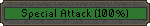 Some weapons in RuneScape have special attacks available for them. There are many types of special attacks, from temporary boosts in stats, to strikes dealing extra damage.
In the combat interfaces of these weapons you will notice a special attack bar. If you click on the bar, then your character will initiate a special attack and use up some of your special attack power.
Different special attacks use up different amounts of power. If you do not have enough power for your weapon's special attack, you won't be able to use it. Your special attack power will slowly restore over time.
You may also drink a recover special potion to recover a quarter of your special attack with each dose. This may only be used once every thirty seconds.
| Magic longbow / Magic composite bow Powershot This attack uses the full power of the longbow and will have an increased chance of hitting your opponent. |
![[image]](../../img/main/kbase/combat/special_attacks/magic_longbow.jpg) |
Rune throwing axe Chain-hit In a multicombat area, this attack bounces the projectile between several targets, dealing damage to each of them. |
![[image]](../../img/main/kbase/combat/special_attacks/rune_throwing_axe.gif) |
| Dragon dagger Puncture This attack consists of two quick strikes at your opponent, with slightly increased accuracy and damage. |
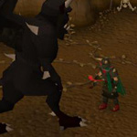 | Magic shortbow Snap-shot This attack allows you to fire two rapid shots at your opponent, but the speed reduces your accuracy. |
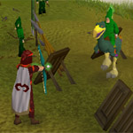 |
| Dragon longsword Cleave This attack is more powerful and so inflicts increased damage to your opponent. |
![[image]](../../img/main/kbase/combat/special_attacks/dragon_longsword2a.jpg) |
Dragon battleaxe Rampage This attack will lower your Attack, Ranged, Defence and Magic stats while boosting your Strength stat. |
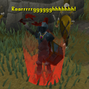 |
| Excalibur Sanctuary This attack protects you from harm by increasing your Defence stat. Enhanced Excalibur Even greater Defence boost, as well as healing lost life points rapidly for a short time. |
![[image]](../../img/main/kbase/combat/special_attacks/excalibur.jpg) |
Rune claws Impale This attack is more powerful and more accurate, though it is slower than normal. |
![[image]](../../img/main/kbase/combat/special_attacks/rune_claws1a.jpg) |
| Granite maul / Granite mace Quick smash This is simply an extra attack taken instantly with no other effects. |
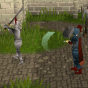 | Dragon mace Shatter This attack is much more powerful, but it also has a reduced chance to hit. |
![[image]](../../img/main/kbase/combat/special_attacks/dragon_mace1.jpg) |
| Dragon spear / Zamorak spear Shove This attack deals no damage to your opponent, it simply forces them back away from you and stuns them for a short time. |
![[image]](../../img/main/kbase/combat/special_attacks/dragon_spear.gif) |
Dragon halberd Sweep A devastating slash through your opponent. For large monsters, the halberd will automatically sweep back and forth to do extra damage. |
![[image]](../../img/main/kbase/combat/special_attacks/dragon_halberd1a.jpg) |
| Abyssal whip Energy drain This attack is more accurate and, if successful, will transfer 25% of your opponent's run energy to you. |
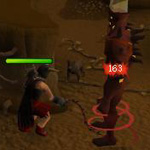 | Dragon scimitar Sever This attack is more accurate and, if successful, will prevent your opponent from using 'Protect from' prayers or 'Deflect' curses for 5 seconds. |
![[image]](../../img/main/kbase/combat/special_attacks/dragon_scimitar2a.jpg) |
| Dragon hatchet Clobber This attack dazes your opponent, lowering their Defence and Magic stats. |
![[image]](../../img/main/kbase/combat/special_attacks/dragon_axe1.jpg) |
Seercull Soulshot This attack reduces the opponent's Magic level by the amount of the damage you inflict. |
![[image]](../../img/main/kbase/combat/special_attacks/seercull1a.jpg) |
| Darklight Weaken If this attack hits the opponent, their Attack, Strength and Defence will be lowered by 5%. Against demons, the Attack, Strength and Defence are reduced by 10%. |
![[image]](../../img/main/kbase/combat/special_attacks/darklight1c.jpg) |
Dragon two-handed sword Powerstab This weapon produces an area attack which does damage to nearby enemies. |
![[image]](../../img/main/kbase/combat/special_attacks/dragon_2h_sword1a.jpg) |
| Ivandis Flail/Rod of Ivandis Retainer When you have weakened a vampyre to 1/2 health, this special suspends them in the air so you can apply a dose of Guthix balance potion to them. |
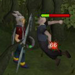 | Bone dagger Backstab This attack will lower your opponent's Defence level by the amount of damage you inflict. You will have a very high chance of hitting an unsuspecting opponent. |
![[image]](../../img/main/kbase/combat/special_attacks/bone_dagger1a.jpg) |
| Dorgeshuun crossbow Snipe This Ranged attack will lower your opponent's Defence level by the amount of damage you inflict. You will have a very high chance of hitting an unsuspecting opponent. |
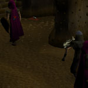 | Barrelchest Anchor Sunder This attack doubles your chance to hit. A successful hit will lower either your enemy's Defence, Attack, Ranged or Magic level by 10% of the damage caused. |
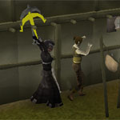 |
| Brine sabre Liquefy Only useable under water. Doubles the chance of hitting, and adds a quarter of the damage dealt to your Strength, Attack and Defence. |
![[image]](../../img/main/kbase/combat/special_attacks/brine_sabre1.jpg) |
Ancient Mace Favour of the War God If this attack hits it will inflict normal damage even through the 'Protect from melee' Prayer. It will recharge your Prayer energy by the amount of damage done while draining your opponent's the same amount. |
![[image]](../../img/main/kbase/combat/special_attacks/ancient_mace.jpg) |
| Dark bow Descent of Darkness Inflicts up to 30% more damage. Minimum 5 damage per arrow. Descent of Dragons Dragon arrows only. Inflicts up to 50% more damage. Minimum 50 damage per arrow. Both attacks will always hit. |
![[image]](../../img/main/kbase/combat/special_attacks/dark_bow.jpg) |
Saradomin sword Saradomin's Lightning Inflicts 50-150 extra Magic damage as lightning strikes your foe. |
![[image]](../../img/main/kbase/combat/special_attacks/saradomin_sword2.jpg) |
| Dragon claws Slice and Dice Four very quick attacks performed at once, with a good chance of inflicting a lot of damage. |
![[image]](../../img/main/kbase/combat/special_attacks/dragon_claws1a.jpg) |
Zanik's Crossbow Defiance Deals increased damage (max. +150) to players using Prayers and/or equipment marked by the gods. Does 30-150 extra damage to other enemies. |
![[image]](../../img/main/kbase/combat/special_attacks/zaniks_crossbow.jpg) |
| Dragon pickaxe Shock A powerful attack which drains 5% from your opponent's Attack, Ranged and Magic. This attack takes longer to perform than a normal attack. |
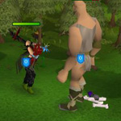 | Hand cannon Aimed Shot Greatly improves the chance of hitting an opponent. This requires longer to aim and there is a greater chance that the hand cannon will explode and be destroyed. |
![[image]](../../img/main/kbase/combat/special_attacks/hand_cannon1.jpg) |
| Penance tridents Reap A chance of instantly killing an enemy with a combat level less than 50 (not including players, bosses, Summoning familiars, or creatures that must be killed in a specific way). In PvP, 'Reap' has the same chance of removing a third of the opponent's current life points. |
![[image]](../../img/main/kbase/combat/special_attacks/penance_trident1.jpg) |
Staff of light Power of Light Drawing upon all of your special attack energy, the staff imbues its wielder with a protective barrier that reduces all melee damage by 50% for the next minute. If the staff is unequipped during this time, the effect is lost. |
![[image]](../../img/main/kbase/combat/special_attacks/staff_of_light.jpg) |
PvP World Weapons
| Statius's warhammer Smash Deals up to 25% more damage and decreases opponent's Defence by 30%. |
![[image]](../../img/main/kbase/combat/special_attacks/statius_warhammer1.jpg) |
Vesta's longsword Feint Inflicts 20% more damage and is harder to defend against. |
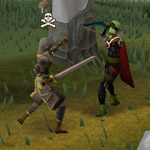 |
| Vesta's spear Spear Wall Damages everyone adjacent and prevents melee attacks from striking you for 5 seconds. |
![[image]](../../img/main/kbase/combat/special_attacks/vesta_spear.jpg) |
Morrigan's throwing axe Hamstring Deals 20% extra damage and drains target's run energy four times faster for the next minute. |
![[image]](../../img/main/kbase/combat/special_attacks/morrigan_throwing_axe.jpg) |
| Morrigan's javelin Phantom strike Inflicts continuous damage in the same way that poison does, but faster and target can still be poisoned. |
![[image]](../../img/main/kbase/combat/special_attacks/morrigan_javelin.jpg) |
The Godsword
The godsword is arguably the most powerful weapon ever to have drawn blood upon RuneScape, and the last great battle of the god wars was solely for control of its awesome powers. If you have the blade of the godsword, you can attach a hilt to vary its special attack.
| Armadyl godsword The Judgment Inflicts 25% more damage. |
![[image]](../../img/main/kbase/combat/special_attacks/armadyl_godsword2a.jpg) |
Bandos godsword Warstrike Attack does 10% more damage and drains your opponent's combat statistics by the amount of damage inflicted. Statistics are drained in the following order: Defence, Strength, Prayer, Attack, Magic, Ranged. |
![[image]](../../img/main/kbase/combat/special_attacks/bandos_godsword2a.jpg) |
| Saradomin godsword Healing Blade Inflicts normal damage, but restores half of the damage to your life points and a quarter to your Prayer. You will receive a minimum of 100 life points and 5 Prayer. |
![[image]](../../img/main/kbase/combat/special_attacks/saradomin_godsword2.jpg) |
Zamorak godsword Ice Cleave Freezes your opponent for 20 seconds. |
![[image]](../../img/main/kbase/combat/special_attacks/zamorak_godsword2.jpg) |

More articles in
Combat
|
|
|
Further Help
If this article does not help you, you may find the following sections of the RuneScape site helpful:
|
|